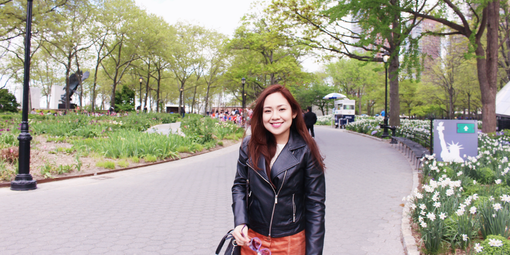

Hi, I'm Janine Ann Buenaseda. I'm a decisive risk-taker who has a passion for learning
and growth.
13 years ago, I started a blog using kawaiiangel.com. Now, I'm opening a site again, this time to show my work as an
aspiring UX Designer.
When I started to learn about User Experience Design, I fell in love with the process. From the conceptualization of an idea
to the fruition of a complete product. I love that my ideas can come to life.
My experiences and failures since I started my career, has taught me how to collaborate, to empathetically see people
holistically, and to know what works for me and what doesn't.
Check out my Resume.
LinkedIn
Email
